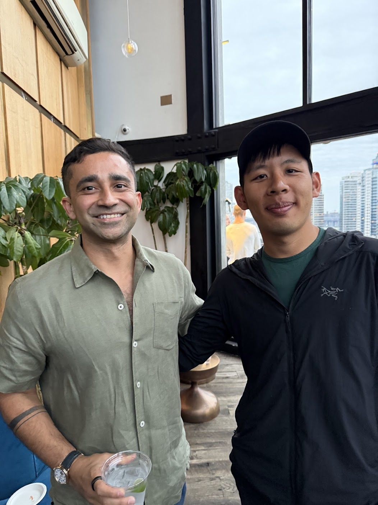
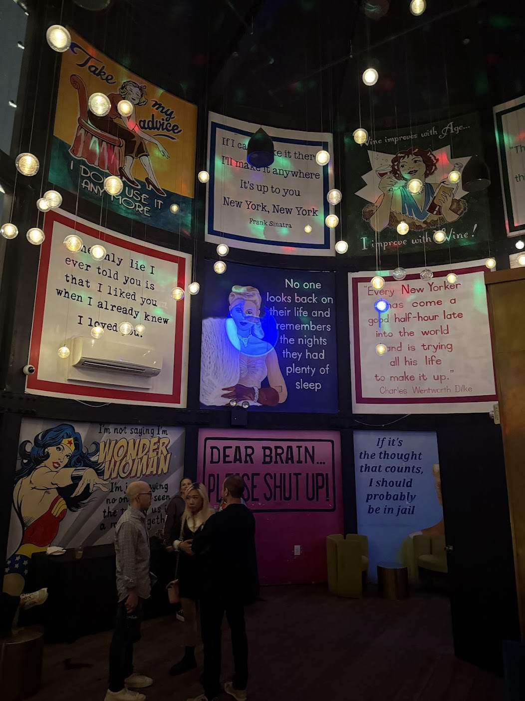
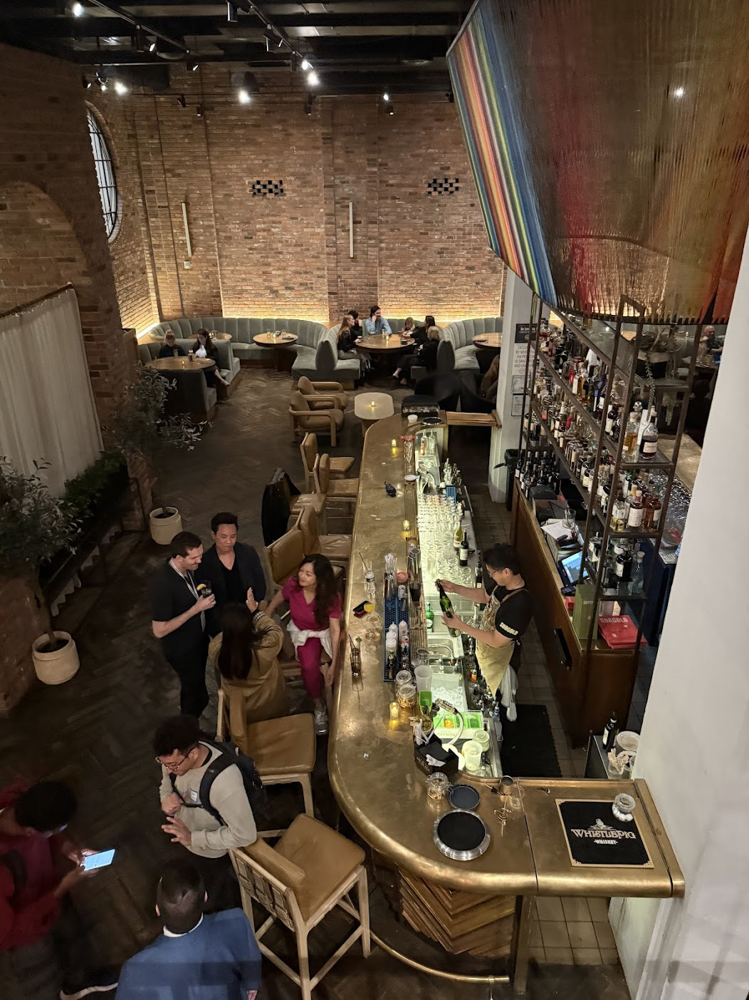
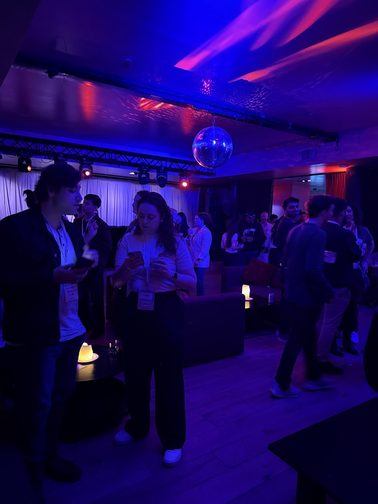
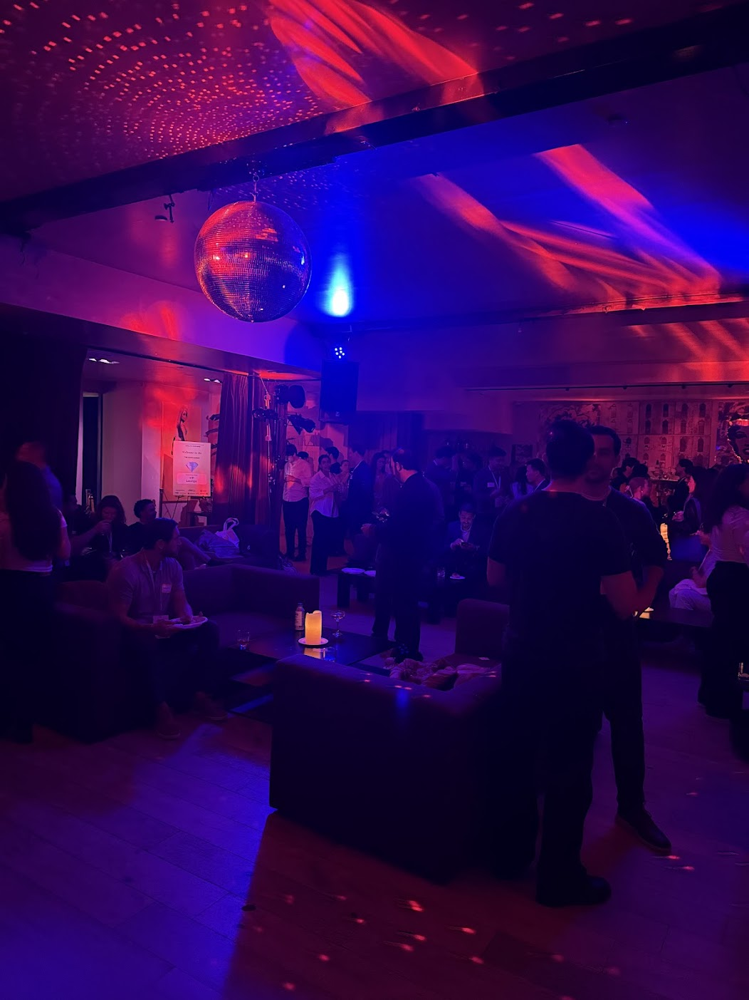
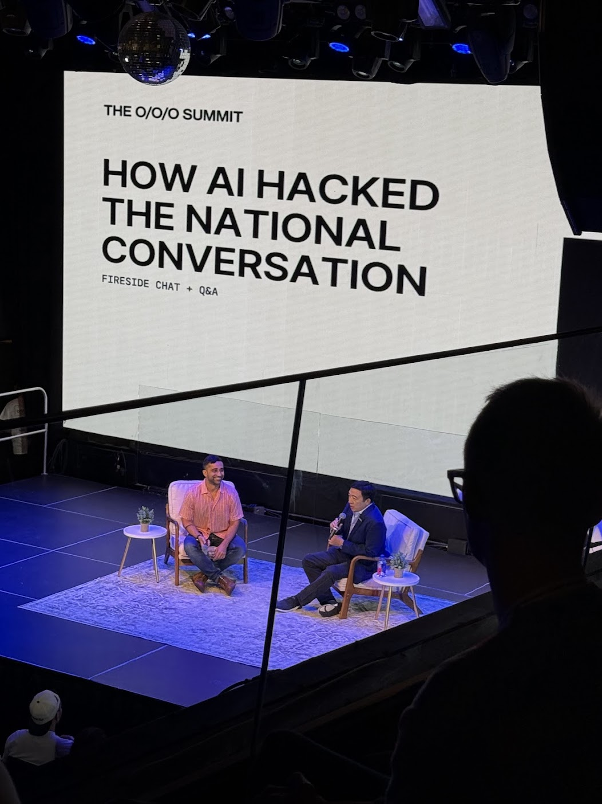
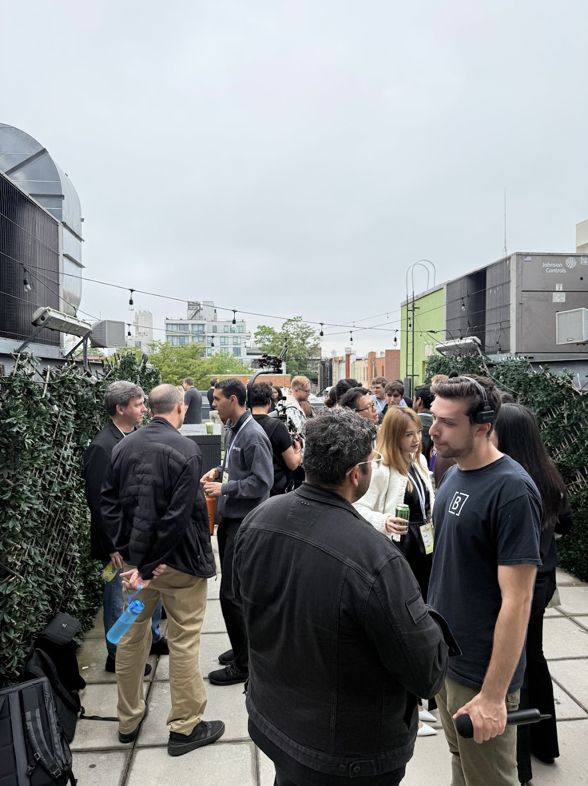
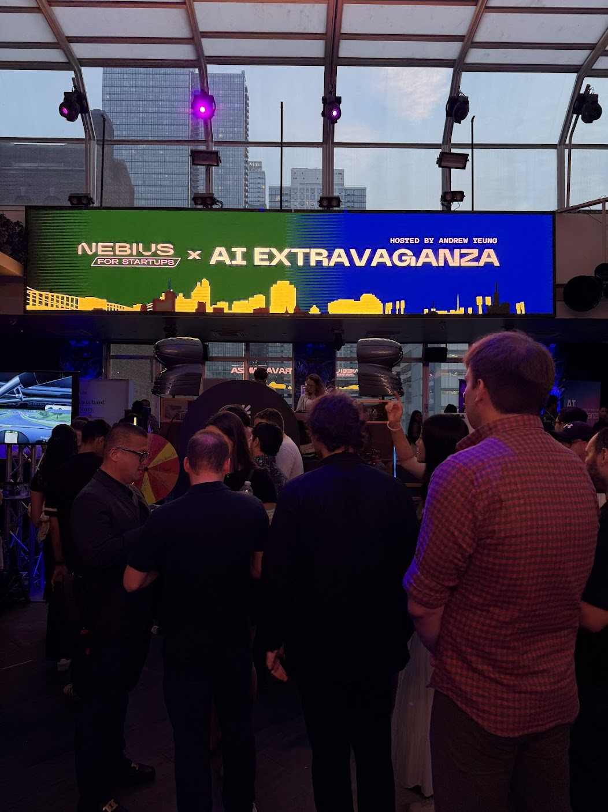
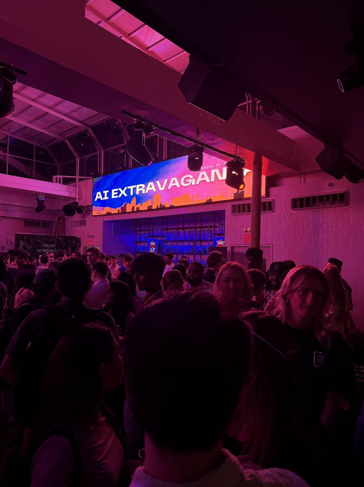

Why I Invested in Carry +
Attending the OOO Summit
I first heard about Ankur Nagpal several years ago when scrolling through X (still Twitter at the time) and reading his interesting tweet threads. As someone interested in personal finance, I found Ankur’s posts on topics such as Mega Backdoor Roths and QSBS (Qualified Small Business Stock) to be both useful and enlightening. Over time, I started attending some of the free virtual seminars that he periodically hosted where I started learning more about the company that he founded named Carry. Carry is a company with a mission to be an "all-in-one platform for tax-advantaged accounts, investments and strategy for business owners and high earning professionals."

Meeting Ankur at the Arlo Williamsburg
So when the opportunity came last summer and Ankur announced on X that he was raising a $10M Series A for Carry, including $1M from customers and the community, I knew I wanted to participate. Ankur’s credentials as a second-time founder (he previously started and sold Teachable), a fellow Berkeley alum (go Bears! 🔵🐻🟡), and the overall hustle that he exhibits (as demonstrated by his willingness to perform cold outreach and share his wisdom with the world) all make me strongly believe in him as a founder. At first, my e-mail expressing interest in the round was met with no reply, but after a second e-mail, I got a response and was able to participate through AngelList. AngelList is one platform that allows individuals to invest in private market companies, alongside EquityZen and other platforms. One common misconception is that you need to be wealthy to invest in startups, but you can read my friend Nate’s article on why this is not the case and on how to become an accredited investor here. It is important to note that compared to investing in public companies, investing in private companies typically involves a longer investment horizon and is higher risk, but at the same time can provide an opportunity to diversify one’s portfolio and achieve uncorrelated returns. I believe that Carry fills a unique niche in providing value and assisting small business owners in achieving their financial goals, while also building a community around it (shoutout to Jaiya Gill!). Note that this post does not contain any financial, investment, legal, or tax advice.


OOO Summit Tech Kickoff Party
My interests in entrepreneurship originated in high school, when I did a research project in my senior year and wrote a paper on the topic of "What makes a leader of a tech company great?" I read books like Zero to One by Peter Thiel and Good to Great by Jim Collins, as well as profiles on Jeff Bezos by Richard Brandt and Steve Jobs by Walter Isaacson. Learning about Silicon Valley and the stories of these individuals was one of the reasons I chose to attend UC Berkeley in the Bay Area to get closer to the world of tech. Although I do not currently work at a startup, I find it personally interesting to stay attuned with the larger startup landscape, as these startups are the source of many innovations in our modern world (e.g. OpenAI, Anthropic, etc.). I also enjoy observing and talking with my friends / peers who are starting or working at startups, applying to YCombinator with ideas, working on their own side projects and more. In addition to entrepreneurship, the world of startup investment has also fascinated me and last year, I became close friends with a venture capitalist from whom I learned a lot about the process by which firms invest in companies. Finally, over the years, I’ve also listened to many episodes of podcasts like the All-In Podcast, Acquired, and My First Million, which explore the worlds of investing and entrepreneurship.


OOO Summit Mixer
These are all reasons why this year, I was determined to attend the OOO Summit hosted by Carry and Andrew Yeung (OOO stands for Owners, Operators, and Outliers), especially after having missed the event last year. I went straight from JFK after returning from Copenhagen (where I had just run the Copenhagen Marathon to qualify for next year's Boston Marathon) to the first mixer event at the Arlo Williamsburg (the view from the rooftop was amazing!). One of my goals in attending this event was to meet Ankur in person for the first time, which I was particularly excited about since he is someone whose high agency has personally inspired me (previously, our only connections were my friend who works at Carry and me virtually giving him Strava kudos). I was also excited by the opportunity to meet fellow members of the community who shared similar passions as me in entrepreneurship. At the mixers over the next few days, I met and had interesting conversations with people such as Varun who left his big tech job to pursue content creation full time, Soundarya who helps high-skilled immigrants get talent visas, Sid who is a professional musician and content creator, Renee who runs her own business in Ohio renting out construction tools, and Edward who started his own podcast and attends the PitchAndRun run club, among others. On the final day of the summit, there was a great lineup of speakers that included an interview between Ankur and Andrew Yang (the former presidential candidate) as well as Sahil Bloom (author of The 5 Types of Wealth as well as a speedy marathon runner himself). Although it was a hectic week of events, I found the OOO Summit to be very well organized and an overall positive experience that I would recommend to others for next year!


OOO Summit Final Day
A few weeks later, I followed up the summit by attending another event with a friend during NY Tech Week called the AI Extravaganza, which was also hosted by Andrew Yeung (the other cohost of the OOO Summit). There I met more interesting people, including Jinny who is working on a platform that "plugs into any hotel tech stack to personalise guest journeys, unlock new upsell revenue, and automate daily ops". It was my first time attending an event like this in NYC and I went in expecting to meet “networky” people, but I was pleasantly surprised and found it to be a fun way to meet people who shared similar interests as me. Going forward, I would be open to attending more similar events in the future as a result!


NY Tech Week AI Extravaganza
All in all, I had a great experience at the OOO Summit and I will continue to root for the success of Carry. Have you ever invested in or worked on a startup idea or side project that you found interesting? Feel free to reach out and let me know, as I would love to hear your thoughts! As always, thank you for reading and until next time!